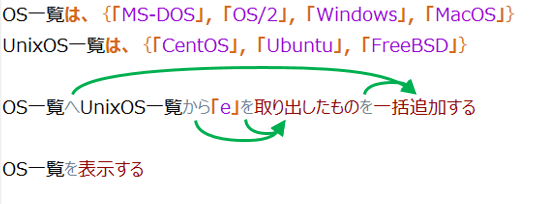

文
プロデルの文は、次のように分類できます。
文の構造
プロデルでは、コンピュータに行わせる処理の一つ一つを「文」で書きます。文は、書かれた順に実行されていきます。文は、補語と動詞から構成されています。
例えば、前の章で取り上げたメッセージを表示する文について説明します。
「こんにちは、プロデルへようこそ」を表示する
この文の場合、
『表示する』が、動詞です。
『「こんにちは、プロデルへようこそ」を』が、引数です。
「表示する」手順の場合、画面に表示する内容は、助詞「～を」でつながる部分で指定しなければなりません。
どの動詞では、どの助詞を書く必要があるのかについては、手順の定義によって決まります。プロデルで提供されている手順については、動詞の一覧などからご確認ください。
引数について
必要な情報として指定する「引数」と「助詞」を組で書きます。手順によっては、複数の「引数・助詞」のペアを指定する場合があります。
次の例では、引数・助詞のペアが２つあります（「～を」と「～へ」）。
「文章.txt」をデスクトップへコピーする。
手順に必要な助詞が含まれていれば、ペアの順番に関係なく正しく解釈されます。例えば、次のように引数・助詞のペアを入れ替えて書いても、正しく動作します。
デスクトップへ「文章.txt」をコピーする。
なお、文には句読点を付けることもできます。
デスクトップへ「文章.txt」を、コピーする。
補語のスタック
プロデルの手順呼出し文では、引数に相当する補語にスタック方式を採用しています。
構文解析時、補語はスタックに格納された後、動詞に係る助詞を含んだ補語であれば、スタックから取り出します。スタックに残った補語はその後の動詞に係ります。

動詞の送りがな
文の動詞の送りがなは、解釈上意味がないため、決まった書き方はありません。
「表示する」手順の場合も、次のようにも書けます。
「おはよう」を表示 「こんにちは」を表示しろ 「こんばんわ」を表示しなさい
読点「。」について
プロデルでは、原則として一行に一つの文を指定できます。
ただし、読点「。」を付けることで一つの行に複数の文でも書けます。
「文章.txt」を削除する。「完了しました」を表示する